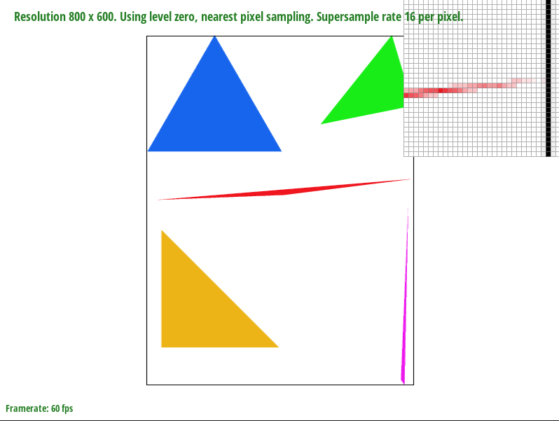

Overview
The goal of this project was to implement a rasterizer. A rasterizer is a program that renders images from scalable vector graphics (SVG) source files using triangles as building blocks. On a high-level, a baseline renderer requires supersampling, barycentric coordinate interpolation, and texture mapping, in order to eliminate jagged edges via anti-aliasing, smooth gradient coloring, and applying anti-aliased textures onto the surface of a target, respectively. As someone with little previous graphics knowledge, the end results from these implementations are quite amazing for me. They show how powerful these techniques are, and how widespread their use is in our world surrounded by various 2D electronic displays.
Section I: Rasterization
Part 1: Rasterizing single-color triangles
In order to rasterize a single color triangle given three vertex coordinates (Cartesian coordinates) and a Color, we simply need to iterate through the pixels in the framebuffer and sample the pixels and see if they are inside the triangle using the Point-in-Triangle Test (Three Line Test) discussed in lecture 2. If the sample point is inside the triangle, then the pixel is colored with Color using the fill_pixel function.
Herein, a sample of a pixel is simply its midpoint. I.e. Sample(pixel(x,y)) = (x + 0.5, y + 0.5)
However, this method checks all the pixels in the framebuffer, which is highly inefficient, as depending on the size and position of the triangle, the majority of the pixels sampled and tested will not be in the triangle. In this manner, to speed up the runtime of this algorithm, we first define an axis-aligned bounding box that circumscribes the triangle. This is done by finding the minimum and maximum coordinates among the vertices of the triangle with the floor and ceiling functions. We then only sample and test pixels within this bounding box. In this manner, the algorithm is no worse than one that checks each sample within the bounding box of the triangle.
For the triangle-in-point test, as described in lecture, I first calculate the normal vectors for all three lines of the triangle.
Then for each sample point, I define a line from the sample point (with sample point coordinates) to each vertex of the triangle, and take their dot product. If all the dot products are >= 0, then I conclude that the point is inside the triangle and call the fill_pixel function with Color c = color. Note that in lecture it is > and not >=, however, this task assumes that boundary pixels are inside the triangle.
Unfortunately, this test does not account for changes in the direction the vertices of the triangle are defined (counter-clockwise or clockwise). To account for this, I then also check if all dot products are <= 0.
I.e. (dot(v_sample_0, n0) >= 0 AND dot(v_sample_1, n1) >= 0 AND dot(v_sample_2, n2) >= 0) OR (dot(v_sample_0, n0) <= 0 AND dot(v_sample_1, n1) <= 0 AND dot(v_sample_2, n2) <= 0))
Where v_sample_i is the line from vertex i of the triangle to the sample point.
As seen from the Figure 1 below, implementing this algorithm successfully allowed the rasterizer to rasterize single-color triangles with sample rate = 1. However, upon closer inspection of the corners of the triangle, because sample rate is 1, we see a significance of jaggies, or aliasing artifacts. This is especially prominent with the thinner triangles.
Part 2: Antialiasing triangles
To address the aliasing artifacts, we implement supersampling. This method is effectively convolving the image with a 2D box function, to filter out high-frequencies. This filtering enables antialiasing of the image. In other words, we sample more than one per pixel by sampling equally partitioned sub-pixels of that pixel, and assign the pixel a color equal to the average of the sample_rate subpixels inside that pixel.
The implementation of supersampling was basically adding two additional nested for loops in the original nested for loops, that go from 0 to sqrt(sample_rate), to calculate the offset of the pixels when sampling. These additional nested for loops allow the additional subdivision between each integer increment of the pixel sample by the rate of supersampling (sqrt(sample_rate)). In other words, allow a sampling of sqrt(sample_rate) x sqrt(sample_rate) times of each pixel.
Then like before, the midpoint of these sub-pixel samples are then tested using the point-in-triangle test from earlier to check if they are within the triangle. If true, the original pixel’s color is updated to be the triangles color value weighted by the ratio of the number of sub-pixel samples that tested positive for the point-in-triangle test.
To implement this method of weighted color assignment, I followed the recommendations in the spec to modify the rasterization pipeline. I implemented and managed a supersample buffer (sample_buffer) which acted as a buffer storing the supersampled color values computed in the 4 nested for loops in the triangle rasterizer function. These color values were then later resolved altogether, to the framebuffer by averaging their RGB color values in the resolve_to_framebuffer() function, thus simplifying the supersampling process. The rasterizing pipeline was modified such that rasterization or pixel coloring only occurred after the sample_buffer was full with supersampled sub-pixel values.
As seen in the figures below, upon implementation of supersampling, as the sampling rate increases, aliasing artifacts that existed at the corners of the thin triangles begin to disappear. By allowing higher sample rates, we can average sampling of sub-pixels and color pixels with a value that is a gradient of color, rather than just choosing between 100% gradient of color and white.
|
|
|

|
Part 3: Transforms
To implement the transformations, I simply implemented the transformation matrices explained in lecture 4.
For my custom cubeman figure, I tried to make it so he was waving with both hands. I also added a sway in his legs to emphasize his waving gesture for good measure. It is important to note that the order of transformations matters in the final outcome. Therefore I added a rotation on the entirety of cubman first to emphasize his sway, and then individually scaled, translated and then rotated the various components of cubeman into position to get his final pose.

Section II: Sampling
Part 4: Barycentric coordinates
The barycentric coordinate system is defined such that each point is a weighted sum of values alpha, beta, and gamma. If we define α, β, and γ to be the distance from the first, second, and third vertices of the triangle, respectively, and we constrain their sum, such that
α + β + γ = 1 ,
The barycentric coordinate system can be used to represent points inside a triangle. More importantly, using the barycentric coordinate system to represent pixels in the triangle, we can interpolate across the triangle. As shown in the triangle figure below, if we let the values at the individual vertices be some arbitrary points in a featurespace, e.g. RGB colors, UV texture, etc., we can then interpolate these distinct values and blend them across the triangle. In the mentioned example, each of the vertices were distinct colors in the RGB colorspace: red, green, and blue. The use of barycentric coordinates, allows the rasterizer to interpolate these colors within the colorspace to blend them across the triangle.
We do this by getting the barycentric coordinates for each sampled pixel, and then scaling the individual vertex functions or values with these barycentric coordinates. In this manner, the value featurespace value assigned to each sample pixel (or sub-pixel is using supersampling) is
αA + βB + γC
where A, B, C are the sample values (or the function that returns the sample value) assigned to the individual vertices v1, v2, and v3, respectively, of the triangle.
|
Each vertex is assigned an individual color (red, green, or blue), each pixel in the triangle has color interpolated using its barycentric coordinate (distance from each vector). |
|
Part 5: "Pixel sampling" for texture mapping
Expanding on the use of barycentric coordinates for interpolation from just color to any sampling function, we can interpolate along any featurespace. In this manner, we can use barycentric coordinates of a sampled pixel to map a corresponding texture coordinate in a manner which interpolate a triangle with a specific texture mapping.
To do this, we first map the three individual vertices of the triangle to their respective u,v texture coordinates, and then proceed to map every other pixel within the triangle to a pixel in the texture map. The iterative process of sampling and then interpolating is the same method used in the previous task. The only difference now is in how we choose the color of a sampled pixel or sub-pixel in the triangle. The interpolation process computes the coordinates to use to sample the texture map to get the color to be assigned to the sampled pixel or subpixel in the triangle. However, we cannot simply take the exact coordinates and use them to sample the texture map, as these could be some non-integer values which can produce inaccurate texture mapping. Instead, we need to use a separate texture sampling method that takes the coordinates and outputs a corresponding sample from the texture map for those coordinates. There are two approaches to doing this: nearest sampling, and bilinear sampling.
Nearest sampling is a naive approach which involves finding the u,v texture coordinate that is the closest to the inputted pixel coordinates, by rounding the inputted coordinates to the nearest integer coordinate. The texture map pixel value at this integer coordinate is then used to color the corresponding triangle pixel being sampled. Unfortunately, the process produces some aliasing artifacts (see examples below), especially prominent when mapping low-resolution texture maps, or mapping texture maps to a large area.
Bilinear pixel sampling is a little more advanced, in order to address this aliasing issue. This method takes samples of the 4 texture coordinates closest to the input coordinate and outputs the linear interpolation of them. This was implemented by using the lerp function, and lerping the pixel values of the two horizontally adjacent texture samples, and then lerping their outputs together (vertically lerping the samples). As expected, this interpolation process of texture sampling allows for a smoother texture mapping on the triangle (see example below).
|
|
|
|
|
|
As seen from the figures above, even when supersampling is used, such as when sample_rate is 16, nearest sampling still has aliasing artifacts. This is since nearest sampling simply chooses a single pixel to sample for a point on the triangle, without considering the neighboring pixels. As a result, if the scale between the texture map and the surface being mapped to is not approx. 1:1, or if the texture map has a lot of high-frequency features, like large pixel value changes between adjacent pixels, the nearest sampling method will produce aliasing artifacts such as moire patterns or jaggies. In contrast, bilinear sampling accounts for these high-frequencies and fine details, as it blends or interpolates the values of adjacent pixels in the texture map when sampling for a point on the triangle. Hence, the output texture mapping on the surface will be much smoother with significantly reduced aliasing artifacts.
Part 6: "Level sampling" with mipmaps for texture mapping
Level sampling enables us to address the instance where a single pixel in the surface to be mapped corresponds to multiple pixels in the texture map (texels). As mentioned in lecture, this issue is especially prominent in minification i.e. when trying to map textures to walls and floors in the backgrounds of a scene. If these textures are of high resolution and have high frequency features or details, their mapping onto the background surfaces without level sampling can produce moire patterns, jaggies and other aliasing artifacts. This is since adjacent pixels will differ very significantly in the original texture, but due to their minification, the mapping algorithm will jump between these varying pixels leading to a non-uniform mapping of the surface.
In our implementation of level sampling we used Mipmaps. Mipmaps essentially cache iteratively downsampled versions of the original texture at the cost of some memory. This method of implementing level-sampling by caching rather than computing on the spot significantly reduces the runtime for texture mapping. What’s more, as discussed in lecture 5, the additional cost of memory for Mipmaps is only ⅓ the memory used to store the original texture map, making the use of Mipmaps for level sampling more computationally sound given their significant improvement on rendering (see examples below).
The implementation of Mipmaps for texture mapping involves figuring out which Mipmap level to use when mapping the texture to a surface in screen space. This was done by taking the derivatives of the texel corresponding to the point sampled from the surface (d(x, y)/d(u, v)), and the texel corresponding to an adjacent point on the surface, and finding the magnitude of distance between these two derivative values after they are scaled by width and height of the texture map for dx and dy respectively. Taking the log of this magnitude value, the Mipmap level is then simply the output from the log, or the nearest integer value to the log output, depending on which level sampling method is used (Nearest or Bilinear respectively). If using the continuous log output (for Bilinear level sampling), the sampling method uses a weighted sum of the sample from each of the adjacent mipmap levels as described in lecture 5.
On a high level, the difference in derivative allows us to find out the degree of high-frequency details the texture has (how much change in values exists between adjacent texel values). As complexity of the texture increases, the level chosen from the Mipmap decreases in resolution (more downsampled) to avoid aliasing artifacts from minification of high-frequency features.
|
|

|
|
|
|
Image is the smoothest as shown in the gradient coloring of the roof.
When determining the tradeoffs between speed, memory usage, and antialiasing power between the three various techniques, it was found that fastest rendering with least memory usage occurred when using nearest sampling with zero level sampling. This makes sense as nearest sampling does not use interpolation, so the lack of additional steps makes sampling faster. Zero level sampling proceeds by using the original texture image for mapping, which avoids the additional steps involved with MipMaps. However, this resulted in the worst amount of aliasing artifacts in the image, with the least amount of anti-aliasing power.
Nearest level sampling tended to have runtime between zero level and bilinear level sampling, but memory usage similar to zero-level sampling, as it required the overhead for level sampling, but no additional memory usage beyond that like as needed with the weighted sum computation of bilinear level sampling. As a result, it also tended to have anti-aliasing power higher than zero-level sampling but lower than bilinear level sampling.
Bilinear level sampling has the slowest runtime with the most memory usage, as it both requires the overhead of level sampling, and the interpolation computation between levels which requires the caching and sampling of multiple levels during mapping. Nevertheless, it also has the greatest anti-aliasing power due to its ability to interpolate features on the texture map across resolutions when mapping to the surface.
Likewise, when combined with the various pixel sampling techniques, we find that bilinear pixel sampling tends to outperform nearest pixel sampling in terms of anti-aliasing power across the board, but at the cost of being consistently slower in speed. The combination that led to the greatest anti-aliasing power, at the cost of using the most memory and being the slowest, was bilinear pixel sampling with bilinear level sampling (AKA trilinear sampling), as it performed a weighted sum computation for both adjacent pixels and levels, for the highest resolution of interpolation.
*An interesting error, or bug that was discovered was that when using trilinear sampling, if we increase the sampling rate, the surface turns black. However, if we revert the sampling rate and then increase it again, the surface properly maps the texture with the updated sampling rate as it should have in the first place. I was unable to determine the cause of this bug, but my hypothesis is that the issue relates to some issue in the rendering pipeline, or the way memory is managed that is causing the rasterizer to incorrectly map all the pixels on the surface to 0 (black). I say this because the issue is not encountered when increasing sampling rate for texture mapping when using nearest layer sampling with either bilinear or nearest pixel sampling, or any other combination, all of which uses less computation power and memory than trilinear sampling.